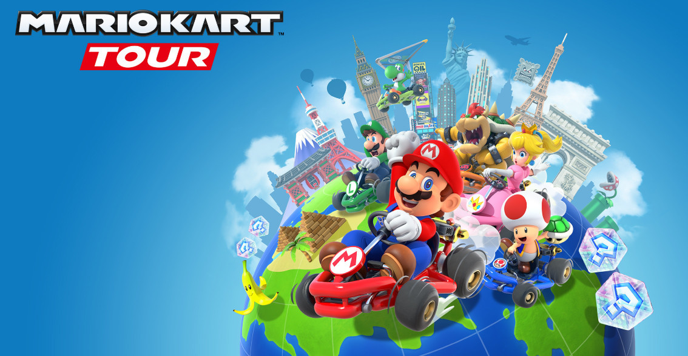
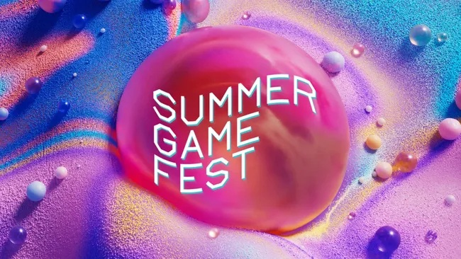
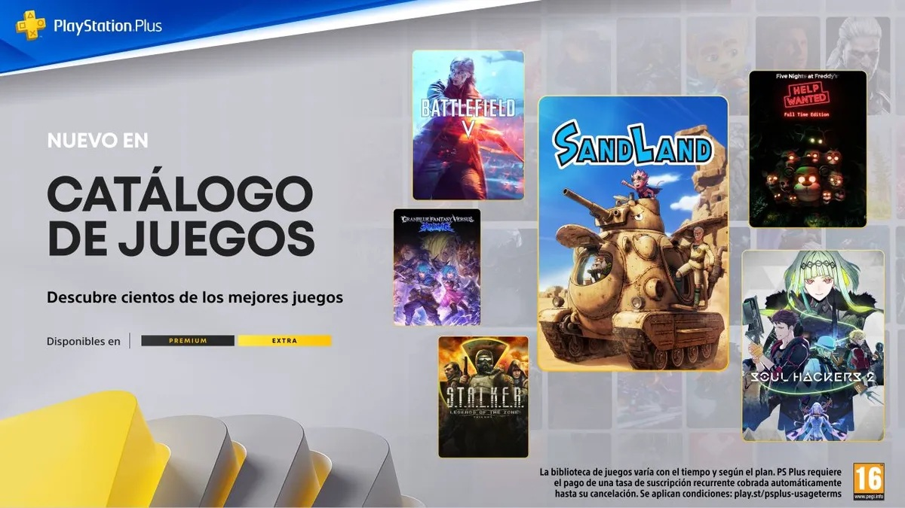
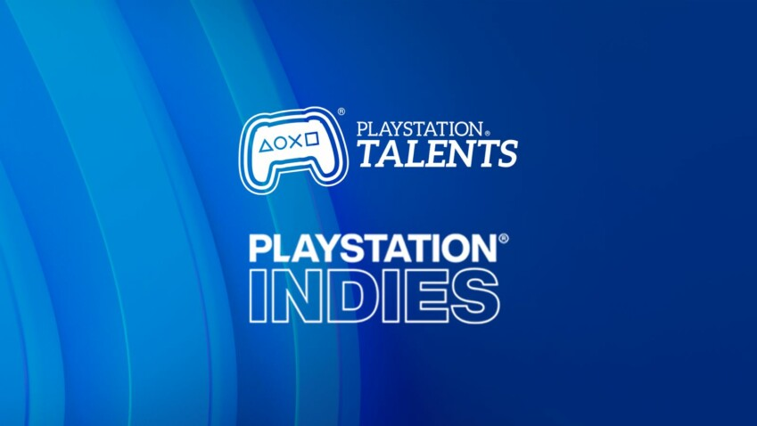
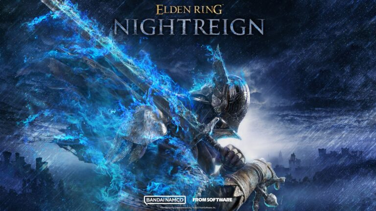
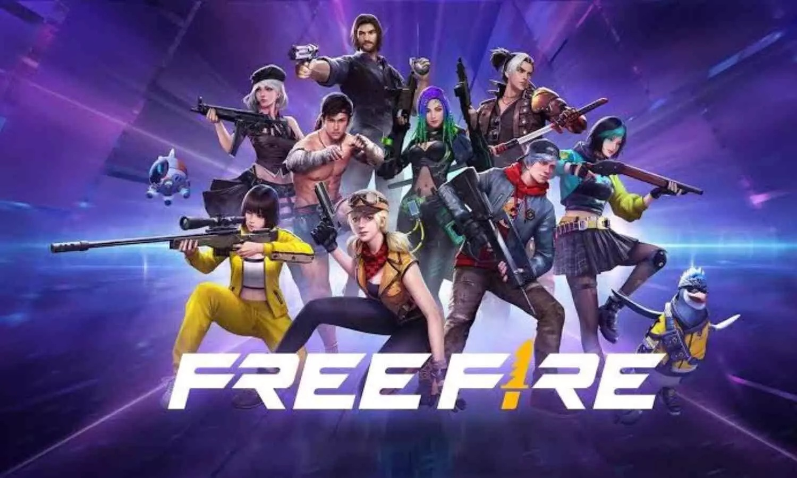

🎮 Nintendo apuesta por Mario Kart World como título de lanzamiento de la Switch 2
Nintendo ha confirmado que Mario Kart World será el juego estrella en el lanzamiento de la Nintendo Switch 2, programado para el 5 de junio. La decisión se basa en el éxito de Mario Kart 8 Deluxe, que vendió más de 67 millones de copias. El nuevo título promete accesibilidad para todos los jugadores y una profundidad que satisfará a los más experimentados.

🗓️ Summer Game Fest 2025: fecha y expectativas
El Summer Game Fest 2025 se celebrará el 6 de junio a las 23:00 (hora peninsular española). Se espera que el evento presente novedades sobre títulos como Hollow Knight: Silksong, Final Fantasy IX Remake y Death Stranding 2. Además, coincidirá con el lanzamiento de la Nintendo Switch 2, lo que podría traer anuncios adicionales relacionados con la nueva consola.

🕹️ PS Plus Extra y Premium ofrecen títulos destacados en mayo
Sony ha anunciado que juegos como Sand Land, Battlefield V, Soul Hackers 2 y S.T.A.L.K.E.R.: Legends of the Zone Trilogy estarán disponibles para los suscriptores de PS Plus Extra y Premium a partir del 20 de mayo. La selección de este mes destaca por su enfoque en RPGs y acción.

🧙♂️ Kingdom Hearts IV podría permitir jugar con Mickey Mouse
Nuevas imágenes de Kingdom Hearts IV sugieren que Mickey Mouse podría ser un personaje jugable por primera vez en la saga. Esta novedad ha generado gran expectación entre los fans. Aunque aún no hay fecha de lanzamiento confirmada, el desarrollo del juego continúa avanzando.
🚀 Lanzamientos indie destacados en PlayStation
PlayStation presenta varios títulos indie en mayo, incluyendo Spirit of the North 2, una secuela que ofrece exploración en un mundo abierto con biomas únicos, y Rebel Transmute, un metroidvania con edición física ya disponible. Estos juegos destacan por su estilo artístico y jugabilidad envolvente.

🔥 Doom: The Dark Ages transporta la acción a la Edad Media
Doom: The Dark Ages se lanzó el 15 de mayo, ofreciendo una experiencia de combate más estratégica ambientada en un reino medieval. El juego sirve como precuela de Doom (2016) y Doom Eternal, explorando los orígenes del Doom Slayer.

🎮 Elden Ring: Nightreign llega a finales de mayo
FromSoftware lanzará Elden Ring: Nightreign el 30 de mayo. Este nuevo juego de acción multijugador estará disponible en PS4, PS5, Xbox One, Xbox Series y PC, y promete expandir el universo de Elden Ring con nuevas aventuras.

🆓 Nuevos códigos de Free Fire disponibles por tiempo limitado
Garena ha lanzado nuevos códigos de recompensas gratuitas para Free Fire el 19 de mayo. Los jugadores pueden obtener skins y otros objetos sin coste alguno. Los códigos son válidos por 24 horas y deben canjearse en el portal oficial de recompensas.
